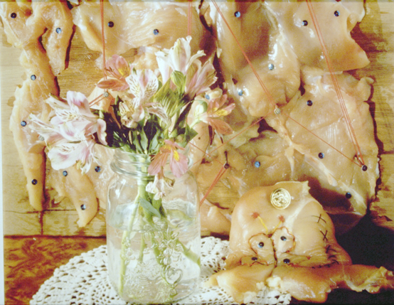

Newspeak is a new programming language in the tradition of Self and Smalltalk. Newspeak is highly dynamic and reflective - but designed to support modularity and security. It supports both object-oriented and functional programming.
Like Self , Newspeak is message-based; all names are dynamically bound. However, like Smalltalk, Newspeak uses classes rather than prototypes. As in Beta , classes may nest. Because class names are late bound, all classes are virtual, every class can act as a mixin, and class hierarchy inheritance falls out automatically. Top level classes are essentially self contained parametric namespaces, and serve to define component style modules, which naturally define sandboxes in an object-capability style. Newspeak was deliberately designed as a principled dynamically typed language. We plan to evolve the language to support pluggable types .
For more information about Newspeak, please see the Newspeak Programming Language website .
Last updated July 4, 2026
Copyright Gilad Bracha 2006–2027